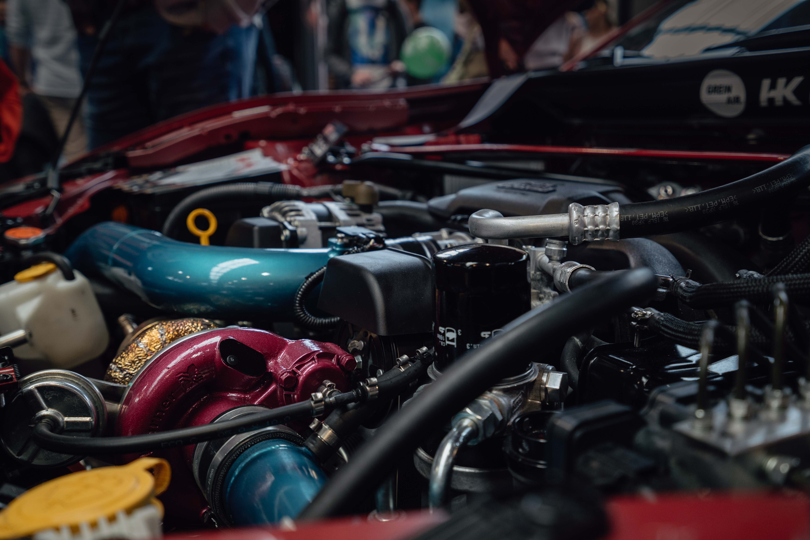

Silniki Turbodoładowane

Twin Turbo/Biturbo
Twin Turbo/Biturbo odnosi się do turbodoładowanego silnika spalinowego, dla którego dwie turbosprężarki sprężają dopływające powietrze. Istnieją dwie powszechnie stosowane konfiguracje: równoległe BiTurbo i szeregowe Twinturbo.
BiTurbo
Doładowanie BiTurbo jest to system dwóch turbosprężarek działających równolegle, co ma na celu poprawę nadążności pracy urządzenia doładowującego do zmiennych warunków obciążenia.
BiTurbo
Doładowanie BiTurbo jest to system dwóch turbosprężarek działających równolegle, co ma na celu poprawę nadążności pracy urządzenia doładowującego do zmiennych warunków obciążenia.
TwinTurbo
TwinTurbo jest rozwiązaniem bardzo podobnym do BiTurbo, różniącym się jednak sposobem pracy. Zastosowano dwie turbosprężarki mniejszą, pracującą w niskim zakresie prędkości obrotowych silnika (do 1500 obr./min) i dużą, która w momencie osiągania wyższych prędkości obrotowych załączana jest stopniowo, żeby od prędkości 2500 obr./min odgrywać decydującą rolę w procesie napełniania silnika. Dzięki zastosowaniu dwóch różnych wielkości turbosprężarek poprawiono zakres efektywnej pracy urządzenia w całym zakresie obrotów silnika. Mniejsza turbosprężarka, charakteryzująca się małą bezwładnością łopatek, pracuje przy małych obciążeniach silnika i dodatkowo wykorzystuje zjawisko "sprężania wstępnego", realizowanego przez większą turbosprężarkę. Przełączanie zasilania strugi powietrza na poszczególne turbosprężarki jest realizowane za pomocą pneumatycznie sterowanego zaworu.
TwinTurbo jest rozwiązaniem bardzo podobnym do BiTurbo, różniącym się jednak sposobem pracy. Zastosowano dwie turbosprężarki mniejszą, pracującą w niskim zakresie prędkości obrotowych silnika (do 1500 obr./min) i dużą, która w momencie osiągania wyższych prędkości obrotowych załączana jest stopniowo, żeby od prędkości 2500 obr./min odgrywać decydującą rolę w procesie napełniania silnika. Dzięki zastosowaniu dwóch różnych wielkości turbosprężarek poprawiono zakres efektywnej pracy urządzenia w całym zakresie obrotów silnika. Mniejsza turbosprężarka, charakteryzująca się małą bezwładnością łopatek, pracuje przy małych obciążeniach silnika i dodatkowo wykorzystuje zjawisko "sprężania wstępnego", realizowanego przez większą turbosprężarkę. Przełączanie zasilania strugi powietrza na poszczególne turbosprężarki jest realizowane za pomocą pneumatycznie sterowanego zaworu.